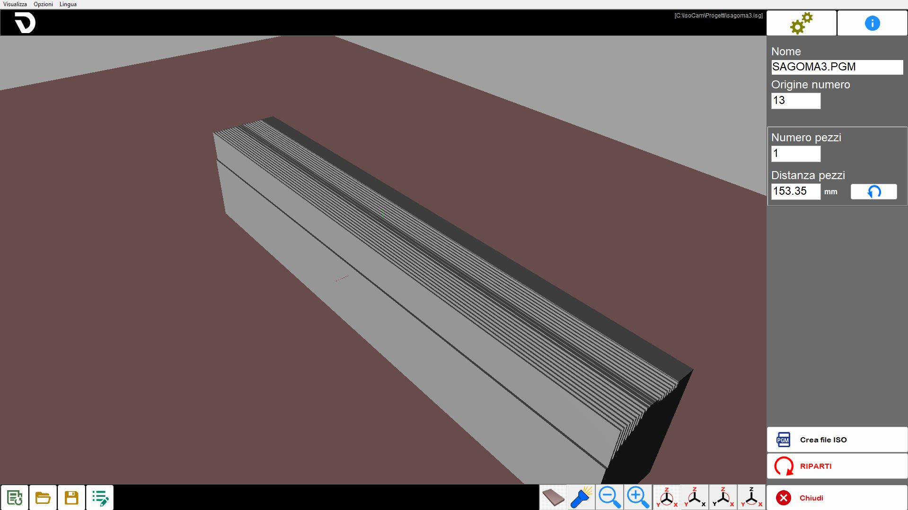
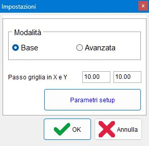

IsoCam is the software used to machine profiles with the blade. It allows users to draw or import shapes, define the profile and apply different machining methods.
The machining programming workflow is divided into several stages, described on the subordinate pages.

Elements common to the various steps
The user interface consists of several areas.
Menu: quick utilities.
Top bar: functions specific to the active page.
Central area: contains the drawing or active area, depending on the page.
Side bar: panel containing the parameters to be modified.
Bottom bar: buttons generally available in several areas of the software.
The following elements always remain visible, regardless of the current stage of the process.
Menu
The menu bar is located at the top, above all other elements of the interface.
View | The operator can use several settings relating to the visibility of the workpieces in the work area. |
Options | Colour settings can be changed. |
Language | ISOCAM is currently available in the following languages:
|
Right side bar
 | Settings |
Info | |
 | Step Management |
Close |
Settings
This panel allows users to switch to IsoCamAdvanced mode, return to the basicversion and change the X and Y Grid Step

Bottom bar
Contains the common commands used to manage the current machining operation.
New machining operation | |
 | Open machining operation |
 | Save machining operation |
 | Edit machining operation |